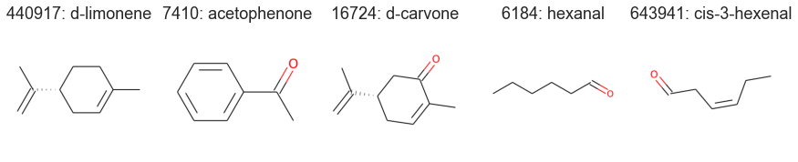

3. Visualization¶
import pyrfume
import seaborn as sns
sns.set(font_scale=1.5)
sns.set_style('whitegrid')
molecules = pyrfume.load_data('my_data/molecules.csv') # Load the data from the last chapter
Now that our molecules have standard representations (from Part 1), we can easily visualize them:
from pyrfume.odorants import display_molecules
display_molecules(molecules)

Or we can ask where they live in low-dimensional spaces built from features, compared with other odorous molecules.
from pyrfume.odorants import embed_molecules
acetophenone = molecules.loc[[7410]]
embed_molecules(acetophenone)

The above shows thousands of molecules from the Pyrfume database (black) and acetophenone in red, using a 2-dimensional UMAP embedding built from those thousands of molecules.